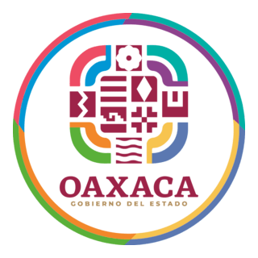
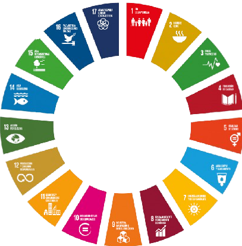
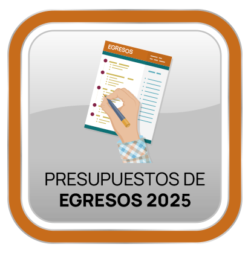

MUNICIPIO DE SAN AGUSTÍN LOXICHA,
DISTRITO DE POCHUTLA, OAXACA
ADMINISTRACIÓN MUNICIPAL 2023-2025

⮐ Regresar al inicio
GACETA
Manual de Organización y Políticas Laborales
Manual de Procedimientos
Bando de Policía San Agustín Loxicha
Código de Ética
Código de Conducta

Plan Municipal de Desarrollo San Agustín Loxicha 2023–2025
Padron anual de Obras Lox 2025
Programa Anual De Adquisiciones 2025

PROYECTO DE PRESUPUESTO DE EGRESOS DEL ESTADO DE OAXACA PARA EL EJERCICIO FISCAL 2025
ACTA NOMBRAMIENTO DE COMITE DE ADQUISICIONES, ARRENDAMIENTOS Y SERVICIOS
Padron de proveedores
PROGRAMA ANUAL DE ADQUISICIONES, ARRENDAMIENTO Y SERVICIOS
PRESUPUESTO DE EGRESOS 2025
01. Modificaciones del Presupuesto de Egresos del mes de Enero 2025
02. Modificaciones del Presupuesto de Egresos del mes de Febrero 2025
03. Modificaciones del Presupuesto de Egresos del mes de Marzo 2025
04. Modificaciones del Presupuesto de Egresos del mes de Abril 2025
05. Modificaciones del Presupuesto de Egresos del mes de Mayo 2025
06. Modificaciones del Presupuesto de Egresos del mes de Junio 2025
07. Modificaciones del Presupuesto de Egresos del mes de Julio 2025
08. Modificaciones del Presupuesto de Egresos del mes de Agosto 2025
09. Modificaciones del Presupuesto de Egresos del mes de Septiembre 2025
10. Modificaciones del Presupuesto de Egresos del mes de Octubre 2025
11. Modificaciones del Presupuesto de Egresos del Mes de Noviembre 2025
12. Modificaciones del Presupuesto de Egresos del mes de Diciembre 2025
Presupuesto Modificado 2025